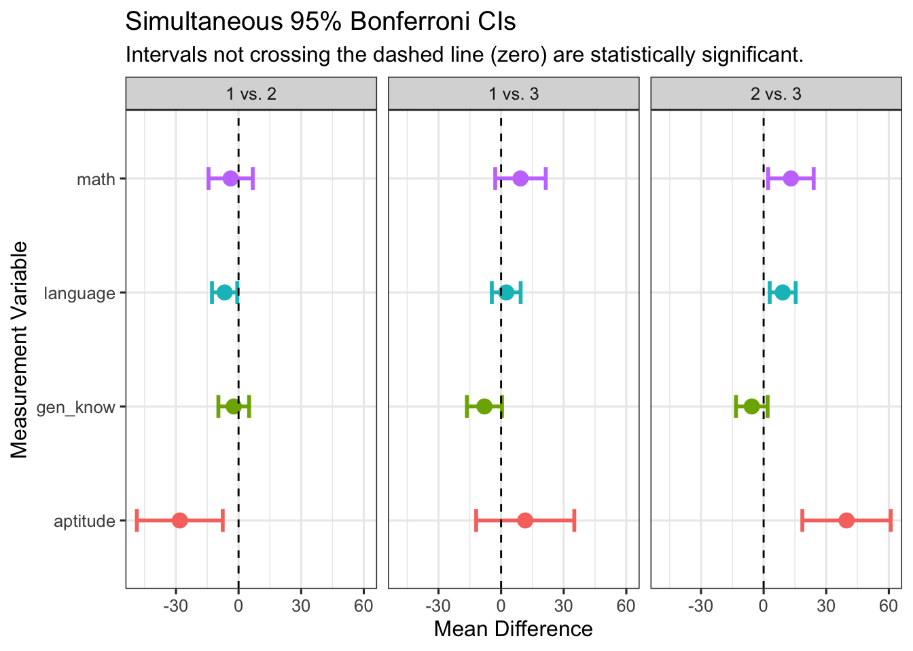
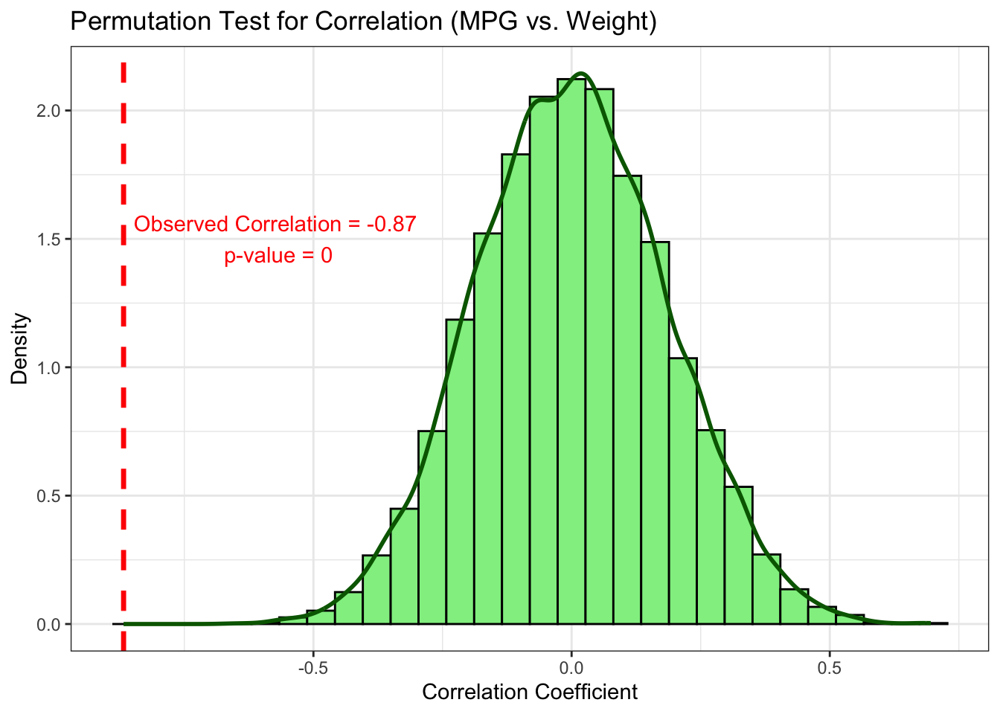

n1 = 50
n2 = 50
p = 2
xbar1 = c(8.3, 4.1)
S1 = matrix(c(2,1,1,6),byrow=TRUE,ncol=2)
xbar2 = c(10.2, 3.9)
S2 = matrix(c(2,1,1,4), byrow=TRUE, ncol=2)5 Inference for Multiple Mean Vectors
5.1 Two-Sample Comparison
Data sources and measurements
- Where the data come from
- Two independent samples: Select n_1 units from population 1 and n_2 units from population 2 (samples are independent; n_1 and n_2 may differ).
- Randomized experiment: Randomly assign n_1 units to treatment 1 and n_2 units to treatment 2 (sample sizes need not be equal).
- What we measure
For each unit, record the same set of p variables (traits), forming a p-dimensional measurement vector.
Key Assumptions
The following assumptions are needed to make inferences about the difference between two population mean vectors \boldsymbol \mu_1 - \boldsymbol \mu_2:
- \mathbf{x}_{1j} \sim N_p(\boldsymbol{\mu}_1, \Sigma_1) independently for j=1,\dots,n_1; and \mathbf{x}_{2k} \sim N_p(\boldsymbol{\mu}_2, \Sigma_2) independently for k=1,\dots,n_2.
- \Sigma_1=\Sigma_2=\Sigma. (Homogeneity of Covariance)
- \mathbf{x}_{1j}’s are independent of \mathbf{x}_{2j}’s.
5.1.1 Example: Two Soap Manufacturing Processes
Background: A consumer goods company is developing a new method for producing soap. They want to determine whether the new process (Process 2) improves product quality compared to the current standard method (Process 1). Two key performance outcomes are of interest:
- Lather quality (x_1):
- A measure of how much and how long-lasting the foam is when the soap is used.
- Measured on a continuous scale by laboratory technicians using a standardized test.
- Mildness (x_2):
- A subjective measure of how gentle the soap is on skin, evaluated by a panel of trained users.
- Also measured on a continuous scale (e.g., skin irritation score, lower is better).
Experimental Setup
- Design: A randomized controlled experiment.
- Sample sizes:
- n_1 = 50 soaps produced using the current process (Process 1)
- n_2 = 50 soaps produced using the new process (Process 2)
- Measurements:
- Each bar of soap is tested for both lather and mildness independently.
Research Questions
Is there evidence that the new process produces soaps with different overall quality, as measured by both lather and mildness?
If a difference exists, which outcome (lather or mildness) contributes more to that difference?
5.1.2 State the Hypotheses
Let \boldsymbol \mu_1 and \boldsymbol \mu_2 be the population mean vectors for process 1 and process 2, respectively: \begin{align*} \boldsymbol \mu_1 = [\text{Mean Leather}_1, \text{Mean Mildness}_1]^\top,\\ \boldsymbol \mu_2 = [\text{Mean Leather}_2, \text{Mean Mildness}_2]^\top. \end{align*}
Hypotheses
H_0: \boldsymbol \mu_1 = \boldsymbol \mu_2 \quad \text{v.s.}\quad H_1: \boldsymbol \mu_1 \neq \boldsymbol \mu_2
5.1.3 Pool Covariance
Pool Covariance
- Point estimate of \boldsymbol \mu_1 - \boldsymbol \mu_2 is \bar{\mathbf{x}}_1 - \bar{\mathbf{x}}_2.
- The population covariance matrix of \bar{\mathbf{x}}_1 - \bar{\mathbf{x}}_2 is \text{Cov}(\bar{\mathbf{x}}_1 - \bar{\mathbf{x}}_2) = \text{Cov}(\bar{\mathbf{x}}_1) + \text{Cov}(\bar{\mathbf{x}}_2) = \frac{1}{n_1}\Sigma + \frac{1}{n_2}\Sigma,
- The pooled estimate of the population covariance matrix is S_{\text{pool}} = \frac{(n_1 - 1)}{(n_1 + n_2 - 2)} S_1 + \frac{(n_2 - 1)}{(n_1 + n_2 - 2)} S_2
R Code: Pooled Covariance
Delta = xbar1 - xbar2
Sp = (n1-1)/(n1+n2-2)*S1 + (n2-1)/(n1+n2-2)*S2
print(Sp) [,1] [,2]
[1,] 2 1
[2,] 1 55.1.4 Hotelling’s T^2 Statistic
Hotelling’s T^2 Statistic
The test statistic is the Hotelling’s T^2 statistic: T^2 = (\bar{\mathbf{x}}_1 - \bar{\mathbf{x}}_2 )^\top\left[\left(\frac{1}{n_1} + \frac{1}{n_2}\right) S_{\text{pool}}\right]^{-1}(\bar{\mathbf{x}}_1 - \bar{\mathbf{x}}_2)
R Code: T2 Statistic
T2 = drop(t(Delta) %*% solve((1/n1+1/n2) * Sp) %*% Delta)
print(T2)[1] 52.472225.1.5 Decision
Decision
We reject H_0: \boldsymbol \mu_1 - \boldsymbol \mu_2 = 0 at level \alpha using one of the following two approaches:
Critical Region: T^2 > c^2, where c^2:= \frac{(n_1 + n_2 -2)p}{(n_1 + n_2 - p - 1)}F_{(p, n_1 + n_2 -p -1), 1-\alpha}.
P-value: The p-value is less than \alpha.
Code
alpha =0.05
c2 = (n1+n2-2)*p / (n1+n2-p-1) * qf(1-alpha, p, n1+n2-p-1)
p_val <- 1 - pf((T2 * (n1 + n2 - p - 1)) /
(p * (n1 + n2 - 2)), p, n1 + n2 - p - 1)
cat("critical value:", c2, " with ", "p-value:", p_val, "\n")critical value: 6.244089 with p-value: 9.286081e-10 Interpretation: Since T^2>c^2, we reject H_0 at \alpha=0.05 and conclude that the population mean measures on lather and mildness are statistically different, but at this point, we do not know which variable contributes to the difference.
5.1.6 Confidence Region
Confidence Region
A 100(1-\alpha)\% confidence region for \boldsymbol \mu_1 - \boldsymbol \mu_2 is given by all values of \boldsymbol \mu_1 - \boldsymbol \mu_2 that satisfy (\bar{\mathbf{x}}_1 - \bar{\mathbf{x}}_2 - (\boldsymbol \mu_1-\boldsymbol \mu_2))'\left[\left(\frac{1}{n_1} + \frac{1}{n_2}\right) S_{\text{pool}}\right]^{-1}(\bar{\mathbf{x}}_1 - \bar{\mathbf{x}}_2 - (\boldsymbol \mu_1-\boldsymbol \mu_2)) \leq c^2. where c^2 is defined above.
- Eigenvalues and eigenvectors of the pooled covariance matrix are
R Code: Eigenvalues and Eigenvectors
eig_result = eigen(Sp)
lambda1 = eig_result$values[1]
names(eig_result$values) = c("lambda1", "lambda2")
# Eigen values are
print(eig_result$values) lambda1 lambda2
5.302776 1.697224 R Code: Eigenvalues and Eigenvectors
# Eigenvectors are
colnames(eig_result$vectors) = c("eigenvector 1", "eigenvector 2")
print(eig_result$vectors) eigenvector 1 eigenvector 2
[1,] 0.2897841 -0.9570920
[2,] 0.9570920 0.2897841R Code: Axes Lengths
# semi-major axis and semi-minor axis:
axis=c(sqrt(eig_result$values[1]) * sqrt((1/n1+1/n2)*c2),
sqrt(eig_result$values[2]) * sqrt((1/n1+1/n2)*c2))
names(axis) = c("axis 1", "axis 2")
print(axis) axis 1 axis 2
1.1508432 0.6510797 - The 95% confidence ellipse for the difference between two population mean vectors
- is centered at \bar{\mathbf{x}}_1 - \bar{\mathbf{x}}_2
- extends \sqrt{\lambda_1} \sqrt{(1/n_1+1/n_2)c^2} = 1.15 and \sqrt{\lambda_2} \sqrt{(1/n_1+1/n_2)c^2} = 0.65 units in the first eigenvector and second eigenvector directions
- Interpretation: Because the origin \mathbf{0} is not inside the ellipse, we conclude that the populations of soaps produced by the two processes are centered at different mean vectors. There appears to be no big difference in mildness means for soaps made by the two processes, but soaps made with the second process produce more lather on average.
5.1.7 Simultaneous CIs
Simultaneous CIs
As in one population case, we can obtain simultaneous confidence intervals for any linear combination of the components of \boldsymbol \mu_1 - \boldsymbol \mu_2.
Suppose we are interested in a set of p simultaneous confidence intervals: \mathbf{a}'_j(\boldsymbol \mu_1 - \boldsymbol \mu_2) = \begin{bmatrix} 0 & 0 & \cdots & 1 & \cdots & 0 \end{bmatrix} \begin{bmatrix} \mu_{11} - \mu_{21} \\ \mu_{12} - \mu_{22} \\ \vdots \\ \mu_{1p} - \mu_{2p} \end{bmatrix} = \mu_{1j} - \mu_{2j} where the vector \mathbf{a}_j has zeros everywhere except for the one in the jth position.
Typically, we would be interested in m such comparisons.
Simultaneous T^2 CIs for \mu_{1j} - \mu_{2j}:
(\bar{x}_{1j} - \bar{x}_{2j}) \pm \sqrt{ \frac{(n_1 + n_2 - 2)p}{n_1 + n_2 - p - 1} \cdot F_{p,\; n_1 + n_2 - p - 1;\; 1 - \alpha} } \cdot \sqrt{ \left( \frac{1}{n_1} + \frac{1}{n_2} \right) \cdot S_{\text{pool},\, jj} } * This interval will simultaneously cover the true values of \mu_{1j} - \mu_{2j} with confidence at least (1-\alpha)\times 100\%.
Simultaneous Bonferroni CIs for \mu_{1j} - \mu_{2j}: (\bar{x}_{1j} - \bar{x}_{2j}) \pm t_{(n_1 + n_2 -2), 1-\alpha/(2m)} \sqrt{\left(\frac{1}{n_1} + \frac{1}{n_2}\right) S_{\text{pool}, jj}}
R Code: T2 CIs
se_j = sqrt((1/n1+1/n2)* diag(Sp))
# T2 CIs
cval_T2 = sqrt(c2)
# Bonferroni CIs
m=2 # only two variables
cval_Bon = qt(1-alpha/(2*m), n1+n2-2)
ci_T2 <- tibble(
Component = c("Lather", "Mildness"),
Estimate = Delta,
HalfWidth = cval_T2 * se_j,
Lower = Estimate - HalfWidth,
Upper = Estimate + HalfWidth
)
print(ci_T2)# A tibble: 2 × 5
Component Estimate HalfWidth Lower Upper
<chr> <dbl> <dbl> <dbl> <dbl>
1 Lather -1.90 0.707 -2.61 -1.19
2 Mildness 0.200 1.12 -0.918 1.32R Code: Bonferroni CIs
ci_Bon <- tibble(
Component = c("Lather", "Mildness"),
Estimate = Delta,
HalfWidth = cval_Bon * se_j,
Lower = Estimate - HalfWidth,
Upper = Estimate + HalfWidth
)
print(ci_Bon)# A tibble: 2 × 5
Component Estimate HalfWidth Lower Upper
<chr> <dbl> <dbl> <dbl> <dbl>
1 Lather -1.90 0.644 -2.54 -1.26
2 Mildness 0.200 1.02 -0.818 1.22Interpretation: Based on simultaneous T2 CIs and Bonferroni CIs, the results confirm previous finding based on confidence ellipse that there appears to be no big difference in mildness means for soaps made by the two processes, but soaps made with the second process produce more lather on average. We also note that T2 CIs are wider than Bonferrorni CIs.
One-At-a-Time CI
Using the univariate approach, we can construct t-intervals for each of mean differences, and obtain the so-called one-at-a-time t intervals (\bar{x}_{1j} - \bar{x}_{2j}) \pm t_{(n_1 + n_2 -2), 1-\alpha/2} \sqrt{\left(\frac{1}{n_1} + \frac{1}{n_2}\right) S_{\text{pool}, jj}}. The one-at-a-time CI does not control the family-wise error at \alpha=0.05. As shown previously, the key difference between the Bonferroni CI and the one-at-a-time CI is that Bonferroni CI controls the family-wise error by assigning \alpha/m level to each interval when there are m comparisons.
5.1.8 Exercise: Steel Tube Data
Steel Tube Data
Background: In steel manufacturing, the rolling temperature — the temperature at which steel is shaped into tubes — can affect the material’s strength profile. To study this, engineers measured the breaking strength (yield point (ksi)) and ultimate strength (ksi) of steel tubes produced at two different rolling temperatures, where 5 samples of steel are tested with low rolling temperature independently and 7 samples of steel are tested with high rolling temperature. The objective is to determine whether changing the rolling temperature results in a change in the strength profile (i.e., yield point and ultimate strength). Based on the following data, please solve the following problems:
Code
steel = readr::read_csv(file = "steel.csv", show_col_types = FALSE) %>%
mutate(temp = as.factor(temp))
n1 <- dim(steel[steel$temp==1, -1])[1]
n2 <- dim(steel[steel$temp==2, -1])[1]
p <- dim(steel[steel$temp==2, -1])[2]
head(steel)- Step 1. Data visualization
R Code: Long Format via pivot_longer
library(dplyr)
df_long = steel %>%
pivot_longer(cols=c(2:3),
names_to="var")
head(df_long)R Code: One variable + multiple groups
ggplot(df_long, aes(x=temp, y=value)) +
geom_point() +
facet_wrap(~var, nrow=1,
scales="free_y")R Code: One group + multiple variables
ggplot(steel) +
geom_point(aes(x=yield, y=strength, col=temp)) Question: What do the plots tell you?
- Step 2. State the research question(s) and define the null and alternative hypotheses using standard notations.
View Solution
The research questions for this data can be stated as follows:
- Does the change in rolling temperature result in the change in strength profile of the steel - that is, does it affect either or both of yield point and ultimate strength?
- If it does affect, which variable is more sensitive to the change in rolling temperature?
Based on the research questions, our objectives are to examine the data and test the null hypothesis that the vectors of means for yield point and ultimate strength are the same for the two rolling temperatures used to produce this type of steel.
- Let x_1 denote the yield point and x_2 denote the ultimate strength.
- Let \mathbf{x}_{1j}: =[x_{1j}, x_{2j}]^\top denote the measured yield point and ultimate strength under low rolling temperature for j=1,\ldots, n_1; and \mathbf{x}_{2j}: =[x_{1j}, x_{2j}]^\top under high rolling temperature for j=1,\ldots, n_2.
- Let \boldsymbol \mu_1, \boldsymbol \mu_2 be the population mean vectors of yield point and ultimate strength under low and high rolling temperature respectively: \boldsymbol \mu_1: =[ \text{Mean Yield}_1, \text{Mean Strength}_1]^\top, \quad \boldsymbol \mu_2: =[ \text{Mean Yield}_2, \text{Mean Strength}_2]^\top or more precisely, \boldsymbol \mu_1 = E(\mathbf{x}_{1j}) and \boldsymbol \mu_2 = E(\mathbf{x}_{2j}).
The null and alternative hypothesese are given as follows H_0: \boldsymbol \mu_1 = \boldsymbol \mu_2 \quad \text{v.s.}\quad H_1: \boldsymbol \mu_1 \neq \boldsymbol \mu_2
- Step 3. Perform the statistical test.
View Solution
- Step 3(a): Compute summary statistics
Code
# Compute sample mean vector and sample
(xbar1 = sapply(steel[steel$temp==1, -1], mean)) yield strength
36.4 62.6 Code
# covariance matrix for each temperature
(xvar1 = var(steel[steel$temp==1 , -1])) yield strength
yield 7.3 4.2
strength 4.2 4.3Code
# Compute sample mean vector and sample
(xbar2 = sapply(steel[steel$temp==2, -1], mean)) yield strength
39.00000 60.42857 Code
# covariance matrix for each temperature
(xvar2 = var(steel[steel$temp==2 , -1])) yield strength
yield 8.333333 6.666667
strength 6.666667 7.619048- Step 3(b): Check Normality Assumption
Code
# check univariate normaltiy
for(i in 1:p){
apply(steel[steel$temp == i, -1], 2, shapiro.test)
}
# check bivariate normaltiy
mvShapiroTest::mvShapiro.Test(as.matrix(steel[ , 2:3]))
Generalized Shapiro-Wilk test for Multivariate Normality by
Villasenor-Alva and Gonzalez-Estrada
data: as.matrix(steel[, 2:3])
MVW = 0.9584, p-value = 0.8718- Step 3(c): Check Homogeneity Assumption
Code
# Apply Box's M-test to test the null hypothesis of homogeneous covariance matrices.
biotools::boxM(steel[ , -1], steel$temp)
Box's M-test for Homogeneity of Covariance Matrices
data: steel[, -1]
Chi-Sq (approx.) = 0.38077, df = 3, p-value = 0.9442- Step 3(d): Two-Sample Hotelling’s T^2 Test
Code
T2result <- DescTools::HotellingsT2Test(steel[steel$temp == 1, -1],
steel[steel$temp == 2, -1])
T2result
Hotelling's two sample T2-test
data: steel[steel$temp == 1, -1] and steel[steel$temp == 2, -1]
T.2 = 10.76, df1 = 2, df2 = 9, p-value = 0.004106
alternative hypothesis: true location difference is not equal to c(0,0)- Step 4. Construct the confidence region and interpret the results.
View Solution
Code
# sample difference
Delta = xbar1 - xbar2
# compute pooled covariance matrix
Sp <- ((n1-1)*xvar1 +(n2-1)*xvar2)/(n1+n2-2)
# compute T2 statistic
T2 = drop(t(Delta)%*%solve((1/n1+1/n2) * Sp)%*%Delta)
print(T2)[1] 23.91171Code
# critical value
alpha = 0.05
c2 = (n1+n2-2)*p / (n1+n2-p-1) * qf(1-alpha, p, n1+n2-p-1)
# this is the covariance of Delta
Sigma_ell <- (1/n1 + 1/n2) * Sp
eig <- eigen(Sigma_ell)
A <- eig$vectors %*% diag(sqrt(eig$values)) * sqrt(c2)
theta <- seq(0, 2*pi, length.out = 400)
pts <- t(matrix(Delta, nrow = 2, ncol = length(theta)) +
A %*% rbind(cos(theta), sin(theta)))
df_ell <- as.data.frame(pts)
colnames(df_ell) <- c("Yield", "Strength")
center <- data.frame(Yield = Delta[1], Strength = Delta[2])
gg <- ggplot() +
geom_path(data = df_ell, aes(Yield, Strength)) +
geom_point(data = center, aes(Yield, Strength), color = "red", size = 3) +
coord_equal() +
theme_minimal() +
labs(x="Yield Difference", y="Strength Difference")
print(gg)Interpretation:
The 95\% confidence ellipse for the difference between two population mean vectors
- is centered at -2.6, 2.17,
- and extends 6.45 and 2.11 units in the first and second eigenvectors directions.
Since the origin 0 does not fall into the 95\% confidence ellipse, we conclude that the change in rolling temperature indeed affect the strength profile significantly at \alpha=0.05, which is consistent with the Hotelling’s T^2 test. However, at this point we do not know whether individual variable would contribute to this change along.
- Step 5. Construct simultaneous T^2 and Bonferroni CIs and interpret the results.
View Solution
Code
# confidence level
level <- 0.95
se_j = sqrt(diag(Sp) * (1/n1 + 1/n2))
# Compute degrees of freedom and the multipliers
df1 <- p
df2 <- n1+n2-p-1
df3 <- n1+n2-2
cval_T2 <- sqrt((n1+n2-2)*p*qf(level,df1,df2)/(n1+n2-p-1))
m = p
level2 <- 1-(1-level)/(2*m)
cval_Bon <- qt(level2, df3)
ci_T2 <- tibble(
Component = c("Yield", "Strength"),
Estimate = Delta,
Lower = Estimate - cval_T2 * se_j,
Upper = Estimate + cval_T2 * se_j
)
cat("T2 CI:")T2 CI:Code
print(ci_T2)# A tibble: 2 × 4
Component Estimate Lower Upper
<chr> <dbl> <dbl> <dbl>
1 Yield -2.6 -7.67 2.47
2 Strength 2.17 -2.35 6.69Code
ci_Bon <- tibble(
Component = c("Yield", "Strength"),
Estimate = Delta,
Lower = Estimate - cval_Bon * se_j,
Upper = Estimate + cval_Bon * se_j
)
cat("Bonferroni CI:")Bonferroni CI:Code
print(ci_Bon)# A tibble: 2 × 4
Component Estimate Lower Upper
<chr> <dbl> <dbl> <dbl>
1 Yield -2.6 -6.94 1.74
2 Strength 2.17 -1.70 6.04Interpretation: The simultaneous T^2 CIs and Bonferroni CIs do include the origin for each population mean parameter. While we get two seemingly contradictory results, they are not wrong. The key reason is that the (joint) confidence region obtained above effectively takes into account the correlation between these two variables: yield point and ultimate strength. From the scatter plot between these two variables, we also notice that there is a strong positive correlation under both rolling temperature. Thus, it is possible that (0,0) is outside the 95\% confidence ellipse but all individual intervals would contain 0, indicating non-significant difference for individual variables (as these variables are highly correlated.) A powerful and correct way for multivariate test is to use the Hotelling’s T^2 test or joint confidence region to detect a difference that the individual simultaneous intervals would miss.
5.2 Comparing Multiple Mean Vectors
In multivariate analysis, we often want to test whether several groups have the same mean vector for multiple variables. This is the multivariate extension of one-way ANOVA: Multivariate Analysis of Variance (MANOVA). We can extend the comparison of mean vectors to g different groups (or treatments) or populations for p responses.
Key Assumptions
The following assumptions are needed to make inferences about the difference between any two population mean vectors: \boldsymbol \mu_{\ell_1} - \boldsymbol \mu_{\ell_2} for \ell_1\neq \ell_2:
Each observation vector sampled from the \ell-th population (or group) follows a multivariate normal distribution: for \ell=1,\ldots g, \mathbf{x}_{\ell 1}, \mathbf{x}_{\ell 2}, \dots, \mathbf{x}_{\ell n_\ell} \overset{ind}{\sim} N_p(\boldsymbol{\mu}_\ell, {\Sigma}).
Covariance matrices are homogeneous: \Sigma_\ell = \Sigma for every population.
Observations from one population (or group) is independent of any observations from other populations.
5.2.1 Example: Iris Data
Background
A botanist wants to determine if the three species of iris flowers (setosa, versicolor, and virginica) have different overall morphologies. Instead of just looking at one measurement, they want to compare the species based on a complete profile of all four available measurements: Sepal.Length, Sepal.Width, Petal.Length, and Petal.Width from the iris data.
Because we are comparing a vector of mean responses across more than two groups, this is a classic problem for Multivariate Analysis of Variance (MANOVA).
- Groups (g=3):
setosa,versicolor,virginica - Response Variables (p=4):
Sepal.Length,Sepal.Width,Petal.Length,Petal.Width - Research Question: Are the mean vectors of these four characteristics the same across all three species?
5.2.2 Load and Visualize the Data
Before testing, it is crucial to visualize the data. A pairs plot is excellent for this, as it shows the relationship between all variables for each species.
R Code: Between Group plots
library(dplyr)
library(ggplot2)
data(iris)
#head(iris)
df = iris
g = length(levels(df$Species))
p = 4
df_long = df %>%
pivot_longer(cols=c(1:4),
names_to="var")
g1 = ggplot(df_long) +
geom_point(aes(x=Species, y=value),
size=.8, alpha=.8) +
facet_wrap(~var, scales="free_y")
print(g1)Interpretation: These panels suggest that there is a moderate variation across different species (groups) for each of the variables. Within each species (group), the observations also indicates some variations.
R Code: Between Group boxplots
g2 = ggplot(df_long, aes(x=Species, y=value)) +
geom_boxplot(fill = 'skyblue') +
#geom_jitter(width = 0.1) +
facet_wrap(~var, scales="free_y") +
labs(y="")
print(g2)Interpretation: All the variables across different species roughly follow symmetric distributions, except for the Petal.Width from the Setosa, whose distribution seems to be highly skewed to the right.
R Code: Pairwise Scatterplot
library(GGally)
# Create a pairs plot, colored by Species
ggpairs(
iris,
columns = 1:4,
ggplot2::aes(color = Species)
) +
labs(title = "Pairs Plot of Iris Measurements by Species") +
theme_bw()
Interpretation: The plot shows some separation among the three species, especially for the petal measurements. There are strong linear associations between Petal.Length and Petal.Width among all the three species. In general, there is also a linear association between Sepal.Length and Petal.Length, between Septal.Length and Petal.Width.
5.2.3 State the Hypotheses
Formulate the null and alternative hypotheses for the MANOVA test.
Hypotheses
The null hypothesis states that the true mean vectors for the full morphology profile are identical for all three species. The alternative hypothesis states that at least two of the species have different mean vectors.
Null Hypothesis (H_0): H_0: \boldsymbol{\mu}_{\text{setosa}} = \boldsymbol{\mu}_{\text{versicolor}} = \boldsymbol{\mu}_{\text{virginica}}
Alternative Hypothesis (H_1): H_1: \text{At least one } \boldsymbol{\mu}_{k} \neq \boldsymbol{\mu}_{\ell} \text{ for } k \neq \ell
5.2.4 Check Assumptions
MANOVA relies on two key assumptions: multivariate normality within each group and the homogeneity of their covariance matrices.
R Code: Normality Checks
# check univariate normaltiy
iris %>%
pivot_longer(
cols = 1:4,
names_to = "Variable",
values_to = "Value"
) %>%
# Group by both Species and the new Variable column
group_by(Species, Variable) %>%
# Run the shapiro.test for each group
dplyr::summarise(
p_value = stats::shapiro.test(Value)$p.value,
.groups = "drop"
)R Code: Normality Checks
# check multivariate normaltiy
mntest = c()
for(i in levels(iris$Species)){
mntest[i] = mvShapiroTest::mvShapiro.Test(
as.matrix(iris[iris$Species == i, -5]))$p.value
}
# p values:
print(mntest) setosa versicolor virginica
0.0120325 0.3182897 0.9652400 R Code: Test Homogeneity of Covariance Matrices
# Note: Box's M-test is very sensitive, especially with larger datasets.
biotools::boxM(iris[, 1:4], iris$Species)
Box's M-test for Homogeneity of Covariance Matrices
data: iris[, 1:4]
Chi-Sq (approx.) = 140.94, df = 20, p-value < 2.2e-16Interpretation:
- Normality: The p-values for all three species are relatively large (>0.01), indicating that the data within each group are roughly consistent with a multivariate normal distribution.
- Box’s M-Test: The p-value is very small (
p < 0.001), indicating that the assumption of equal covariance matrices is violated. However, MANOVA is generally robust to this violation when group sizes are equal (as they are here, n=50 for each), so we can proceed, but we should acknowledge this limitation in a formal report.
5.2.5 One-Way MANOVA
We will now perform the MANOVA to formally test the null hypothesis. The most common test statistic is Wilk’s \Lambda, which essentially compares the variability within groups to the total variability. Small values of Wilk’s \Lambda suggest that the group means are different.
The one-way MANOVA model is given by: \mathbf{x}_{\ell j} = \boldsymbol{\mu} + \boldsymbol{\tau}_{\ell} + \boldsymbol{\epsilon}_{\ell j}, \quad \ell=1,\ldots, g; \quad j=1,\ldots, n_{\ell} where
- \boldsymbol{\tau}_{\ell} represents the treatment (group) effect with the constraint that \sum_{\ell=1}^{g} n_{\ell} \boldsymbol{\tau}_{\ell} = \mathbf{0},
- the error terms are independently distributed as \boldsymbol{\epsilon}_{\ell j} \sim N_p(\mathbf{0}, {\Sigma}),
- \boldsymbol \mu is the overall (or grand) mean across all populations, and \boldsymbol \mu_{\ell} := \boldsymbol \mu + \boldsymbol{\tau}_{\ell} is the group mean for the \ellth population.
MANOVA Table
| Source of Variation | Matrix of Sums of Squares and Cross-Products (SSP) | Degrees of Freedom |
|---|---|---|
| Treatment | B = \sum_{\ell} n_\ell (\bar{\mathbf{x}}_\ell - \bar{\mathbf{x}})(\bar{\mathbf{x}}_\ell - \bar{\mathbf{x}})' | g - 1 |
| Residual | W = \sum_{\ell} \sum_{j} (\mathbf{x}_{\ell j} - \bar{\mathbf{x}}_\ell)(\mathbf{x}_{\ell j} - \bar{\mathbf{x}}_\ell)' | n - g |
| Total (Corrected) | B + W = \sum_{\ell} \sum_{j} (\mathbf{x}_{\ell j} - \bar{\mathbf{x}})(\mathbf{x}_{\ell j} - \bar{\mathbf{x}})' | n - 1 |
The within-group SSP matrix, \mathbf{W}, can be expressed as: \begin{align*} \mathbf{W} &= \sum_{\ell = 1}^g \sum_{j = 1}^{n_\ell} (\mathbf{x}_{\ell j} - \bar{\mathbf{x}}_\ell)(\mathbf{x}_{\ell j} - \bar{\mathbf{x}}_\ell)' \\ &= (n_1 - 1)S_1 + (n_2 - 1) S_2 + \cdots + (n_g - 1) S_g \\ &= (n-g) S_{\text{pool}} \end{align*} where n = \sum_{\ell=1}^g n_\ell.
The pooled covariance matrix is calculated as: S_{\text{pool}} = \sum_{\ell = 1}^g \left[\frac{(n_\ell - 1)}{\sum_{j=1}^g (n_j - 1)}\right] S_\ell.
Wilk’s \Lambda Test Statistic
One test of the null hypothesis is carried out using a statistic called Wilk’s \Lambda (a likelihood ratio test): \Lambda = \frac{|W|}{|B + W|}.
If B is “small” relative to W, then \Lambda will be close to 1. Otherwise, \Lambda will be small.
We reject the null hypothesis when \Lambda is small.
Exact Distribution of Wilk’s \Lambda
| No. of Variables (p) | No. of Groups (g) | Sampling Distribution for Multivariate Normal Data |
|---|---|---|
| p = 1 | g \geq 2 | \left(\frac{n - g}{g - 1}\right)\left(\frac{1 - \Lambda}{\Lambda}\right) \sim F_{g - 1,\ n - g} |
| p = 2 | g \geq 2 | \left(\frac{n - g - 1}{g - 1}\right)\left(\frac{1 - \sqrt{\Lambda}}{\sqrt{\Lambda}}\right) \sim F_{2(g - 1),\ 2(n - g - 1)} |
| p \geq 1 | g = 2 | \left(\frac{n - p - 1}{p}\right)\left(\frac{1 - \Lambda}{\Lambda}\right) \sim F_{p,\ n - p - 1} |
| p \geq 1 | g = 3 | \left(\frac{n - p - 2}{p}\right)\left(\frac{1 - \sqrt{\Lambda}}{\sqrt{\Lambda}}\right) \sim F_{2p,\ 2(n - p - 2)} |
- F Approximation to the Sampling Distribution Wilk’s \Lambda
When the null hypothesis of equal population mean vectors is true, the distribution of the Wilks’ Lambda statistic can be approximated by an F-distribution: \frac{ 1 - \Lambda^{1/b}}{\Lambda^{1/b}} \cdot \frac{ ab - c}{p(g - 1)} \sim F_{p(g - 1),\ ab - c} where \begin{align*} a &= (n - g) - \frac{p - g + 2}{2} \\ b &= \sqrt{ \frac{p^2 (g - 1)^2 - 4}{p^2 + (g - 1)^2 - 5} } \\ c &= \frac{p(g - 1) - 2}{2} \end{align*}
R Code: MANOVA Test
# The manova() function fits the model.
# The formula cbind(Y1, Y2, Y3, Y4) ~ Group tells R to use all four
# measurements as the multivariate response vector.
manova_fit <- manova(
cbind(Sepal.Length, Sepal.Width,
Petal.Length, Petal.Width)
~ Species,
data = iris)
# The summary() function generates the output from the statistical test.
# We specify test = "Wilks" to get the result for Wilk's Lambda.
# Other options include "Pillai", "Hotelling-Lawley", and "Roy".
summary(manova_fit, test = "Wilks") Df Wilks approx F num Df den Df Pr(>F)
Species 2 0.023439 199.15 8 288 < 2.2e-16 ***
Residuals 147
---
Signif. codes: 0 '***' 0.001 '**' 0.01 '*' 0.05 '.' 0.1 ' ' 1Interpret the MANOVA Results
Based on the F-statistic and p-value from the test, what is your conclusion?
Interpretation
The p-value is reported as < 2.2e-16, which is exceptionally small. We reject the null hypothesis at significance level 0.05.
Conclusion: There is a statistically significant difference in the overall morphology (the mean vector of the four measurements) among the three iris species.
5.2.6 Pairwse Comparison
A significant MANOVA result tells us that a difference exists, but not where that difference lies. We need to perform follow-up tests to understand the result more deeply.
Method 1: Univariate ANOVA
A simple first step is to look at the results for each response variable individually to see which ones are contributing to the overall difference.
R Code: Univariate Follow-up
# The summary.aov() function provides the results
# for each dependent variable separately.
summary.aov(manova_fit) Response Sepal.Length :
Df Sum Sq Mean Sq F value Pr(>F)
Species 2 63.212 31.606 119.26 < 2.2e-16 ***
Residuals 147 38.956 0.265
---
Signif. codes: 0 '***' 0.001 '**' 0.01 '*' 0.05 '.' 0.1 ' ' 1
Response Sepal.Width :
Df Sum Sq Mean Sq F value Pr(>F)
Species 2 11.345 5.6725 49.16 < 2.2e-16 ***
Residuals 147 16.962 0.1154
---
Signif. codes: 0 '***' 0.001 '**' 0.01 '*' 0.05 '.' 0.1 ' ' 1
Response Petal.Length :
Df Sum Sq Mean Sq F value Pr(>F)
Species 2 437.10 218.551 1180.2 < 2.2e-16 ***
Residuals 147 27.22 0.185
---
Signif. codes: 0 '***' 0.001 '**' 0.01 '*' 0.05 '.' 0.1 ' ' 1
Response Petal.Width :
Df Sum Sq Mean Sq F value Pr(>F)
Species 2 80.413 40.207 960.01 < 2.2e-16 ***
Residuals 147 6.157 0.042
---
Signif. codes: 0 '***' 0.001 '**' 0.01 '*' 0.05 '.' 0.1 ' ' 1Interpretation: The univariate ANOVAs show extremely small p-values for all four variables (Sepal.Length, Sepal.Width, Petal.Length, and Petal.Width). This indicates that the group means are significantly different for every measurement when considered one at a time.
Method 2: Pairwise Group Comparisons
To find out which specific species are different from each other, we could perform pairwise comparisons. This could involve running two-sample Hotelling’s T² tests for each pair (e.g., setosa vs. versicolor) with a Bonferroni correction to the alpha level to control for multiple comparisons. Given the clear separation in the plots, we can be confident that all three species are significantly different from one another on their overall morphology profile.
- If we wish to carry out all pairwise comparisons, there will be p g (g - 1)/2 of them.
- To maintain a simultaneous type I error level of no more than \alpha we can use t_{(n-g), 1-\frac{\alpha}{2m}} \quad \text{ where } \quad m = \frac{pg(g-1)}{2}.
- Formulas for the simultaneous Bonferroni CIs are \left( \bar{x}_{ik} - \bar{x}_{i \ell} \right) \ \pm \ t_{(n-g), 1-\frac{\alpha}{2m}} \sqrt{\left(\frac{1}{n_k} + \frac{1}{n_\ell}\right) S_{pool,ii}}
R Code: Bonferroni CIs
library(dplyr)
n = iris %>%
count(Species) %>%
pull(n, name = Species)
p = 4 # variables
g = length(levels(iris$Species))
level <- 0.95
m <- p * g * (g - 1) / 2
level2 <- 1 - (1 - level) / (2 * m)
df <- sum(n) - g
c_bon <- qt(level2, df)
# compute pooled covariance matrix
Sp = summary(manova_fit)$SS$Residuals / df
Sp_ii = diag(Sp)
# sample mean
xbar = iris %>%
group_by(Species) %>%
dplyr::summarise(across(where(is.numeric), mean)) %>%
as.matrix()
# Get group sample sizes (n_k) and means (x_bar_k)
iris_summaries <- iris %>%
group_by(Species) %>%
dplyr::summarise(across(where(is.numeric),
list(mean = mean, n = ~ n())),
.groups = "drop")
# Get all unique pairs of species
species_pairs <- combn(unique(iris$Species),
2, simplify = FALSE)
# Use purrr::map_df to loop through pairs
all_intervals <- map_df(species_pairs, function(pair) {
species1 <- pair[1]
species2 <- pair[2]
# Get means and sample sizes for the two species being compared
summary1 <- iris_summaries %>%
filter(Species == species1)
summary2 <- iris_summaries %>%
filter(Species == species2)
n1 <- summary1$Sepal.Length_n
n2 <- summary2$Sepal.Length_n
mean_diffs <- as.numeric(
dplyr::select(summary1,
ends_with("_mean"))) -
as.numeric(
dplyr::select(summary2,
ends_with("_mean")))
# Calculate margin of error for this pair
margin_of_error <- c_bon *
sqrt((1 / n1 + 1 / n2) * Sp_ii)
# Create a tibble for this pair's results
tibble(
Comparison = paste(species1, "vs.", species2),
Variable = names(Sp_ii),
Mean_Difference = mean_diffs,
Lower_CI = mean_diffs - margin_of_error,
Upper_CI = mean_diffs + margin_of_error
)
})
knitr::kable(
all_intervals, digits = 3,
caption = "Simultaneous 95% Bonferroni Confidence Intervals")| Comparison | Variable | Mean_Difference | Lower_CI | Upper_CI |
|---|---|---|---|---|
| setosa vs. versicolor | Sepal.Length | -0.930 | -1.230 | -0.630 |
| setosa vs. versicolor | Sepal.Width | 0.658 | 0.460 | 0.856 |
| setosa vs. versicolor | Petal.Length | -2.798 | -3.049 | -2.547 |
| setosa vs. versicolor | Petal.Width | -1.080 | -1.199 | -0.961 |
| setosa vs. virginica | Sepal.Length | -1.582 | -1.882 | -1.282 |
| setosa vs. virginica | Sepal.Width | 0.454 | 0.256 | 0.652 |
| setosa vs. virginica | Petal.Length | -4.090 | -4.341 | -3.839 |
| setosa vs. virginica | Petal.Width | -1.780 | -1.899 | -1.661 |
| versicolor vs. virginica | Sepal.Length | -0.652 | -0.952 | -0.352 |
| versicolor vs. virginica | Sepal.Width | -0.204 | -0.402 | -0.006 |
| versicolor vs. virginica | Petal.Length | -1.292 | -1.543 | -1.041 |
| versicolor vs. virginica | Petal.Width | -0.700 | -0.819 | -0.581 |
Simultaneous 95% Bonferroni CIs. Intervals not crossing the dashed line (zero) are statistically significant.
R Code: Bonferroni CIs
ggplot(all_intervals,
aes(x = Mean_Difference, y = Variable,
color = Variable)) +
geom_errorbar(aes(xmin = Lower_CI, xmax = Upper_CI),
width = 0.2,
linewidth = 1) +
geom_point(size = 3.5) +
geom_vline(xintercept = 0,
linetype = "dashed",
color = "black") +
facet_wrap( ~ Comparison) +
labs(
x = "Mean Difference",
y = "Variable"
) +
theme_bw(base_size = 12) +
theme(legend.position = "none",
axis.text.y = element_text(angle=60)) Interpretation: This visualization makes the conclusions from our analysis immediately obvious:
- No intervals cross the zero line. Every single error bar for every comparison is clearly to the left or right of the vertical dashed line.
- This provides powerful visual evidence that, after controlling for all 12 comparisons, all three iris species are significantly different from each other on all four measured variables. For example, in the
versicolorv.s.virginicapanel, the point forPetal.Lengthis around -1.3, and its confidence interval from approximately -1.6 to -1.0 is far from zero. - The simultaneous Bonferroni CIs confirm previous MANOVA test and provide more details on which variables are significantly different.
5.2.7 Exercise: College Student Study
Background: In a college student study, a sample of first-year university students was selected from three popular and critical fields of study. Each student was administered a standardized academic assessment battery upon entry. The goal is to see if the overall academic profile differs significantly among these groups. Perform detailed statistical analysis for the data below.
morel = readr::read_csv(file = "morel.csv",
show_col_types = FALSE) %>%
mutate(group = as.factor(group))
head(morel)- Data visualization
View Solution
R Code: Data Visualization
df = morel
response_vars = setdiff(colnames(df), "group")
p = length(response_vars)
g = length(levels(df$group))
df_long = df %>%
pivot_longer(cols=c(2:5),
names_to="var")
ggplot(df_long, aes(x=group, y=value)) +
geom_point() +
facet_wrap(~var, scales="free_y") +
labs(y="")R Code: Data Visualization
GGally::ggpairs(
df,
columns = 2:5, # The four test score variables
ggplot2::aes(color = group),
upper = list(continuous = "cor"),
lower = list(continuous = "points")
) +
labs(title = "Academic Score Profiles by Field of Study") +
theme_bw()
The plot suggests there may be differences. For example, the distribution of math scores for Architecture students appears shifted compared to the other groups.
- State the hypotheses using standard notations.
View Solution
The null hypothesis states that the true mean vectors of test scores are the same for all three student populations. The alternative states that at least two groups have different mean vectors.
Null Hypothesis (H_0): H_0: \boldsymbol{\mu}_{\text{Technology}} = \boldsymbol{\mu}_{\text{Architecture}} = \boldsymbol{\mu}_{\text{Medical Tech}}
Alternative Hypothesis (H_1): H_1: \text{At least one } \boldsymbol{\mu}_{k} \neq \boldsymbol{\mu}_{\ell} \text{ for } k \neq \ell
- Check Assumptions
View Solution
Code
# check univariate normaltiy
df %>%
pivot_longer(
cols = 2:5,
names_to = "Variable",
values_to = "Value"
) %>%
group_by(group, Variable) %>%
dplyr::summarise(
p_value = stats::shapiro.test(Value)$p.value,
.groups = "drop"
)Code
# check multivariate normaltiy
mntest = c()
for(i in levels(df$group)){
mntest[i] = mvShapiroTest::mvShapiro.Test(
as.matrix(df[df$group == i, colnames(df) !="group"]))$p.value
}
# p values:
print(mntest) 1 2 3
0.00388046 0.00389287 0.01745476 Code
biotools::boxM(df[, colnames(df) !="group"], df$group)
Box's M-test for Homogeneity of Covariance Matrices
data: df[, colnames(df) != "group"]
Chi-Sq (approx.) = 33.493, df = 20, p-value = 0.02977- Perform the one-way MANOVA test
View Solution
Code
# fit one-way ANOVA to each of the response
formula = paste("cbind(",
paste(response_vars, collapse = ", "),
") ~ group")
fit.lm = manova(as.formula(formula), data = df)
# fit MANOVA
fit.manova = manova(fit.lm)
summary(fit.manova, test="Wilks") Df Wilks approx F num Df den Df Pr(>F)
group 2 0.54345 6.7736 8 152 1.384e-07 ***
Residuals 79
---
Signif. codes: 0 '***' 0.001 '**' 0.01 '*' 0.05 '.' 0.1 ' ' 1Interpretation: The p-value is less than our significance level of \alpha = 0.05. We therefore reject the null hypothesis. We conclude that there is a statistically significant difference in the mean academic profiles among the three groups of students (Technology, Architecture, and Medical Technology).
- Follow-up analysis with pairwise comparisons
View Solution
Code
n = df %>%
count(group) %>%
pull(n, name = group)
level = 0.95
m = p * g * (g - 1) / 2
level2 = 1 - (1 - level) / (2 * m)
dof = sum(n) - g
c_bon = qt(level2, dof)
# compute pooled sample covariance
Sp = summary(fit.manova)$SS$Residuals / dof
Sp_ii = diag(Sp)
df_summaries <- df %>%
group_by(group) %>%
dplyr::summarise(across(where(is.numeric), list(mean = mean, n = ~ n())), .groups = "drop")
# Get all unique pairs
group_pairs <- combn(unique(df$group), 2, simplify = FALSE)
all_intervals <- purrr::map_df(group_pairs, function(pair) {
group1 <- pair[1]
group2 <- pair[2]
summary1 <- df_summaries %>% filter(group == group1)
summary2 <- df_summaries %>% filter(group == group2)
n1 <- summary1$math_n
n2 <- summary2$math_n
mean_diffs <- as.numeric(dplyr::select(summary1, ends_with("_mean"))) -
as.numeric(dplyr::select(summary2, ends_with("_mean")))
margin_of_error <- c_bon * sqrt((1 / n1 + 1 / n2) * Sp_ii)
tibble(
Comparison = paste(group1, "vs.", group2),
Variable = names(Sp_ii),
Mean_Difference = mean_diffs,
Lower_CI = mean_diffs - margin_of_error,
Upper_CI = mean_diffs + margin_of_error
)
})
knitr::kable(all_intervals, digits = 3, caption = "Simultaneous 95% Bonferroni Confidence Intervals")| Comparison | Variable | Mean_Difference | Lower_CI | Upper_CI |
|---|---|---|---|---|
| 1 vs. 2 | aptitude | -28.158 | -48.736 | -7.580 |
| 1 vs. 2 | math | -3.793 | -14.388 | 6.802 |
| 1 vs. 2 | language | -6.681 | -12.732 | -0.629 |
| 1 vs. 2 | gen_know | -2.309 | -9.669 | 5.051 |
| 1 vs. 3 | aptitude | 11.571 | -11.938 | 35.081 |
| 1 vs. 3 | math | 9.296 | -2.808 | 21.400 |
| 1 vs. 3 | language | 2.466 | -4.448 | 9.380 |
| 1 vs. 3 | gen_know | -7.973 | -16.382 | 0.436 |
| 2 vs. 3 | aptitude | 39.729 | 18.550 | 60.909 |
| 2 vs. 3 | math | 13.089 | 2.185 | 23.993 |
| 2 vs. 3 | language | 9.147 | 2.918 | 15.375 |
| 2 vs. 3 | gen_know | -5.664 | -13.239 | 1.911 |
Code
ggplot(all_intervals,
aes(x = Mean_Difference, y = Variable, color = Variable)) +
geom_errorbar(aes(xmin = Lower_CI, xmax = Upper_CI),
width = 0.2,
linewidth = 1) +
geom_point(size = 3.5) +
geom_vline(xintercept = 0,
linetype = "dashed",
color = "black") +
facet_wrap( ~ Comparison) +
labs(
title = "Simultaneous 95% Bonferroni CIs",
subtitle = "Intervals not crossing the dashed line (zero) are statistically significant.",
x = "Mean Difference",
y = "Measurement Variable"
) +
theme_bw(base_size = 12) +
theme(legend.position = "none")
5.3 Permulation Test
5.3.1 Introduction
A permutation test is a type of non-parametric statistical test. It is “distribution-free,” meaning it does not rely on assumptions that the data are drawn from a given probability distribution (like the normal distribution). This makes it an incredibly robust and versatile tool for hypothesis testing.
When to Use a Permutation Test:
- When your sample size is small.
- When your data does not meet the assumptions of parametric tests (e.g., it’s not normally distributed).
- When you are working with an unusual test statistic for which the theoretical distribution is unknown.
5.3.2 The Steps of a Permutation Test
Every permutation test follows the same fundamental logic:
- Calculate the Observed Statistic: Compute the test statistic on your original, unshuffled data (e.g., the difference in means between two groups).
- Create a Null Distribution:
- Pool all the data together.
- Repeatedly (e.g., 10,000 times) shuffle the pooled data and randomly reassign it to groups of the original sizes.
- For each shuffle, re-calculate the test statistic. The collection of these statistics forms the null distribution—the distribution of what your statistic looks like when the null hypothesis (of no effect) is true.
- Calculate the p-value: The p-value is the proportion of statistics from the null distribution that are as extreme or more extreme than your originally observed statistic.
5.3.3 Example: Two-Sample Comparison
Background: We have data on the fuel efficiency (MPG) for a sample of 4-cylinder and 8-cylinder cars from the mtcars dataset. We want to test if there is a significant difference in the mean MPG between these two groups.
R Code: Two-Sample Permutation Test
library(dplyr)
library(ggplot2)
data(mtcars)
# Prepare the data
cars_data <- mtcars %>%
filter(cyl %in% c(4, 8)) %>%
dplyr::select(mpg, cyl)
group1 <- cars_data %>% filter(cyl == 4) %>% pull(mpg)
group2 <- cars_data %>% filter(cyl == 8) %>% pull(mpg)
n1 <- length(group1)
n2 <- length(group2)
# Calculate the OBSERVED difference in means
observed_diff <- mean(group1) - mean(group2)
# Create the Null Distribution
set.seed(4750) # For reproducibility
n_permutations <- 10000
permutation_diffs <- numeric(n_permutations)
all_data <- c(group1, group2)
for (i in 1:n_permutations) {
# Shuffle the data
shuffled_data <- sample(all_data)
# Assign to new sham groups
new_group1 <- shuffled_data[1:n1]
new_group2 <- shuffled_data[(n1 + 1):(n1 + n2)]
# Calculate and store the difference for this permutation
permutation_diffs[i] <- mean(new_group1) - mean(new_group2)
}
# Calculate the p-value
p_value <- sum(abs(permutation_diffs) >=
abs(observed_diff)) / n_permutations
ggplot(data.frame(diffs = permutation_diffs),
aes(x = diffs)) +
geom_histogram(aes(y = ..density..),
bins = 30, fill = "lightblue",
color = "black") +
geom_density(color = "blue", size = 1) +
geom_vline(xintercept = observed_diff,
color = "red", linetype = "dashed", size = 1.2) +
annotate("text", x = observed_diff - 1.5, y = 0.1,
label = paste("Observed Difference\np-value =",
p_value), color = "red") +
labs(
title = "Permutation Test for MPG Difference (4-cyl vs. 8-cyl)",
x = "Difference in Mean MPG",
y = "Density"
) +
theme_bw()Interpretation: The observed difference (the red dashed line) is far out in the tail of the null distribution, and the p-value is effectively zero. This tells us that it is extremely unlikely to get a difference this large by random chance alone. We can confidently conclude that 4-cylinder cars have a significantly higher mean MPG than 8-cylinder cars.
5.3.4 Exercise: Testing a Correlation
Background: Is there a significant correlation between a car’s weight (wt) and its fuel efficiency (mpg)? The null hypothesis is that the true correlation is zero.
The permutation logic is slightly different here: if there’s no relationship between weight and MPG, then we should be able to shuffle the order of one variable without affecting the correlation.
R Code: Correlation Permutation Test
# Prepare the data
wt_data <- mtcars$wt
mpg_data <- mtcars$mpg
# Calculate the OBSERVED correlation
observed_cor <- cor(wt_data, mpg_data)
# Create the Null Distribution
set.seed(123)
n_permutations <- 10000
permutation_cors <- numeric(n_permutations)
for (i in 1:n_permutations) {
# Shuffle ONLY one of the variables
shuffled_mpg <- sample(mpg_data)
# Calculate and store the correlation for this permutation
permutation_cors[i] <- cor(wt_data, shuffled_mpg)
}
# Calculate the p-value
p_value_cor <- sum(abs(permutation_cors) >=
abs(observed_cor)) / n_permutations
ggplot(data.frame(cors = permutation_cors), aes(x = cors)) +
geom_histogram(aes(y = ..density..), bins = 30,
fill = "lightgreen", color = "black") +
geom_density(color = "darkgreen", size = 1) +
geom_vline(xintercept = observed_cor, color = "red",
linetype = "dashed", size = 1.2) +
annotate("text", x = observed_cor + 0.3, y = 1.5,
label = paste("Observed Correlation =",
round(observed_cor, 2),
"\np-value =", p_value_cor),
color = "red") +
labs(
title = "Permutation Test for Correlation (MPG vs. Weight)",
x = "Correlation Coefficient",
y = "Density"
) +
theme_bw()
Interpretation: The observed correlation of -0.87 is an extreme outlier compared to the null distribution of correlations centered at zero. The p-value is effectively zero. We can conclude there is a highly significant negative correlation between a car’s weight and its fuel efficiency.